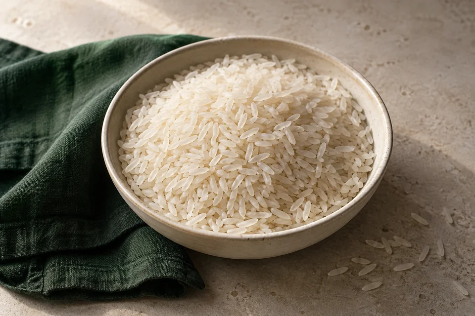
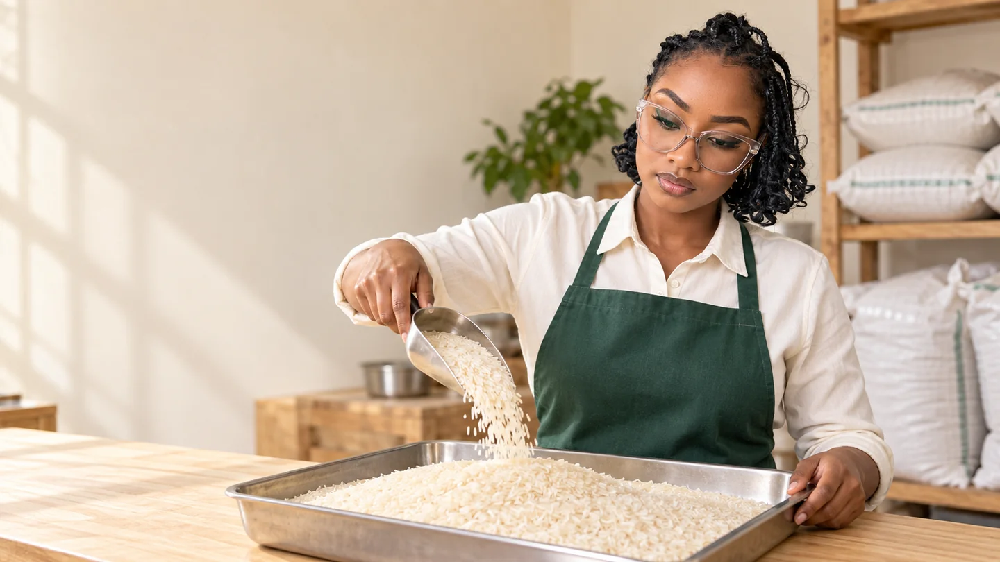
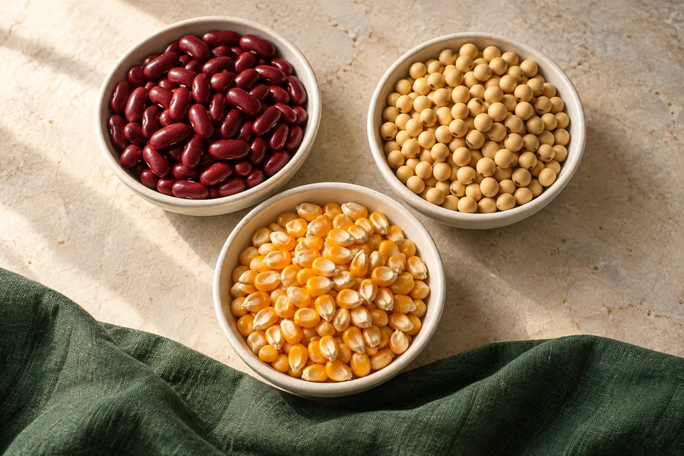

Rice, our speciality.
A range to suit your preferences and purchasing needs.

Supply for every scale. Discover quality rice and staple grains for your kitchen, business or institution.
Rice is where our story began. Today, our range brings together the staple grains that keep kitchens cooking and businesses moving.

A range to suit your preferences and purchasing needs.

Food staples with a place in your next order.
Ask our team about current varieties, grades and availability.
From hospitality kitchens to schools, retailers and institutions, good food starts with the right ingredients—and a conversation about what you need.
Share your grain, quantity, location and preferred timing.
We’ll discuss available options, pricing and supply arrangements.
Agree the details with our team before confirming your order.
In 2016, we began trading local and imported rice in Kabale, Uganda. That foundation grew into Nafaka Foods Limited in 2023.
Our purpose remains simple: make quality food available, create markets for farmers and serve the businesses that bring food to people.
Get to know NafakaOur rice range includes Super, Local, Pakistan and Basmati. Contact our team for current stock, grades and options that suit your needs.
Yes. Share your product, estimated quantity, location and timing. We’ll discuss availability, pricing and the practical arrangements with you.
Use our enquiry form to prepare a WhatsApp message, or call us directly. Pack sizes, minimum quantities, pricing and delivery arrangements are confirmed by our team.
Tell us what you need. We’ll take it from there.